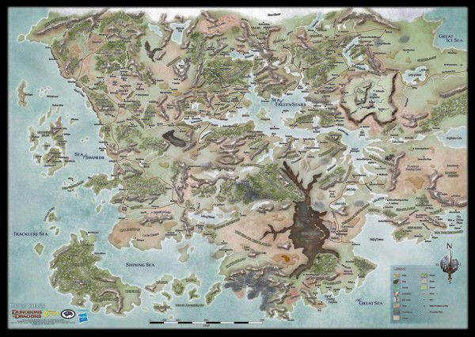

The Forgotten Realms je svet gde je magija veoma prisutna i jaka, legendarna stvorenja su
česta i bogovi se veoma često mešaju u dešavanja smrtnika. Igrači mogu da se upute u nekoliko različitih avantura - od
avantura gde se samo biju i istražuju tamnice do epičnih kampanja o regionalnim ratovima, kataklizmi i direktnim kontakom sa bogovima i vandimenzionalnih stvorenja.
Na teritorijama Forgotten Realms-a nisu samo ljudi, planeta ovog sveta, Abeir-Toril, je podeljena medju ljudima, patuljcima, vilenjacima, goblinima, orkovima, zmajevima i dosta drugih rasa i stvorenja.
Što se tehnologije tiče, svet podseća na pre-industrijsku Zemlju 13-og veka. Nasuprot toga, jako prisustvo magije predstavlja još jedan vid snage društvima.

Ovde možete saznati više o rasama sveta